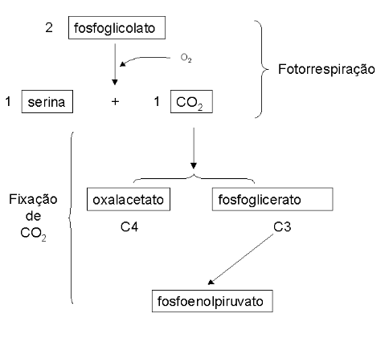

15 Ciclo de Calvin, do Glioxilato, e Fotorrespiração
15.1 Introdução
Três grandes rotas do metabolismo vegetal são protagonizadas para o aproveitamento e síntese de carboidratos a partir de compostos orgânicos: o ciclo do Glioxalato, o ciclo de Calvin e a Fotorrespiração. O ciclo do Glioxalato é constituido por uma via bioquímica alternativa dentro do ciclo de Krebs, e que possibilita à planta a conversão metabólica líquida de gorduras em açúcares, o que é impeditivo em animais. O ciclo de Calvin e a Fotorrespiração, por sua vez, estão relacionados à fixação de dióxido de carbono nos vegetais.
Enquanto que o ciclo de Calvin permite a fixação de CO2 na forma de gliceraldeído, a Fotorrespiração produz CO2 para incorporação diferencial em plantas C3, quando o gás é convertido em fosfoenolpiruvato, ou em C4, quando convertido a oxalacetato para o metabolismo vegetal.
15.2 Detalhes
15.2.1 Ciclo do Glioxilato
O ciclo do Glioxilato consiste basicamente numa conversão de gordura em carbobidratos, exclusiva de peroxissomos e glioxissomos de sementes em germinação. Não obstante, parece ocorrer também em alguns invertebrados e microrganismos (coliformes, leveduras).
A lógica da via do ciclo do Glioxalato constitui num encurtamento do ciclo de Krebs, produzindo intermediários precursores da gliconeogênese, a partir de acetil CoA obtido da oxidação de triacilgliceróis de sementes. Em síntese o ciclo permite uma conversão líquida de acetato em oxalacetato.
A sequência de reações do ciclo do Glioxalato segue uma condensação de duas moléculas de acetil CoA (4 carbonos) uma de glioxalato (2 carbonos), produzindo uma molécula de malato (6 carbonos). A partir de malato, oxalacetato é formado e oxidado novamente a glioxalato (2 carbonos), com liberação molecular de succinato (4 carbonos).
Durante o processo há a produção de NADH (vide Figura do Apêndice II). Dessa forma há um atalho estabelecido no ciclo de Krebs que antecede a liberação das duas moléculas de CO2 deste.
Como acetil CoA também possui duas moléculas de carbono, é salutar afirmar que vegetais e microrganismos são capazes de conversão enzimática de gorduras em açúcares, já que não há a perda de acetil CoA (2 carbonos) na forma de CO2 (1 carbono, duas descarboxilações), o que ocorre no ciclo de Krebs de animais superiores.
O ciclo do Glioxalato é uma rota biossintética, ao passo que o ciclo de Krebs constitui uma via de degradação. Nesse sentido, a fosforilação da isocitrato desidrogenase desvia o ciclo para a produção de glioxalato (enzima inativa), enquanto que sua defosforilação o realoca para o ciclo de Krebs (enzima ativa).
 ### Ciclo de Calvin
### Ciclo de Calvin
O ciclo de Calvin, atribuido ao Nobel de Química de 1961, Melvin Calvin, é constituído por uma via cíclica de fixação de CO2 nos vegetais, para a produção de carboidratos, proteínas e lipídios. Sinteticamente, o ciclo compreende as reações fotossintéticas que ocorrem no escuro.
A lógica da via do ciclo de Calvin envolve uma fixação de 3 moléculas de CO2 com 3 moléculas de ribulose-1,5-difosfato (5 carbonos). Dessa forma, há a produção de 6 moléculas de gliceraldeído-3-fosfato (3 carbonos), com consumo global de 7 moléculas de ATP e 6 de NADPH. Cinco moléculas de gliceraldeído-3-P regeneram as 3 moléculas de ribulose-1,5-difosfato originais, sendo que o restante pode ser utilizada na glicólise, na biossíntese de amido, ou de outros carboidratos, pela via das pentoses.
A regulação do ciclo de Calvin se dá por enzimas fotossensíveis, variações de pH induzidas pela luz (movimento de prótons), e por modificação alostérica nas enzimas.

A atividade enzimática limitante do ciclo é deteminada pela ribulose-1,5-bifosfato carboxilase, ou rubisco, a qual fixa o CO2 atmosférico utilizando como substrato a ribulose, com formação de 3-fosfoglicerato. A rubisco é tida como uma das enzimas mais abundantes na Natureza, e apresenta 8 subunidades distribuidas em 500 kD relativos de peso molecular.

15.2.2 Fotorrespiração
A fotorrespiração é uma via de produção de fosfoglicolato nos peroxissomos das células foliares, a partir do ciclo de Calvin, com consumo de O2 e produção de CO2. O fosfoglicolato formado pode, posteriormente, ser convertido a glioxilato. A proporção entre o ciclo de Calvin e a fotorrespiração é de 3 para 1. A lógica da via envolve uma conversão de 2 moléculas de fosfoglicolato em 1 molécula de serina e 1 molécula de CO2, com consumo de 1 molécula de O2. A função metabólica da fotorrespiração não está ainda clara, posto que o fosfoglicolato não constitui um metabólito útil, não ocorrendo também a fixação de CO2. Além disto, a via desperdiça energia na produção e oxidação de fosfoglicolato (ciclo fútil). Os vegetais possuem mecanismos distintos para prevenção da fotorrespiração.
Similarmente ao ciclo de Calvin, a fotorrespiração tem como limitante a atividade enzimática da ribulose-1,5-bifosfato oxigenase, uma atividade devastadora e sem propósito molecular conhecido da rubisco. No entanto, a fotorrespiração parece constituir em uma via de reciclagem que resgata alguns dos carbonos que se perdem devido à atividade oxigenásica da rubisco.

15.2.3 Plantas C3 e plantas C4
Enquanto algumas plantas fixam primeiramente o CO2 num composto de 4 carbonos, o oxalacetato, algumas o fixam num de 3 carbonos, o fosfoglicerato, com regeneração em fosfoenolpiruvato. Nesse sentido, são denominadas as plantas C3 (Ciclo de Calvin) e C4 (via de Hatch-Slack), essas últimas representadas por gramíneas, plantas tropicais e de cultivo agrícola, como o milho.
Em síntese a fotorrespiração é impedida nas plantas C4 porque o CO2 é primeiro fixado a um composto de 4 carbonos em um compartimento (células mesofílicas), para depois ser liberado como CO2 em outro (células envoltórias do feixe). Posteriormente ocorre a fixação deste (células da bainha do feixe), de modo similar ao das plantas C3.

A via C4 possui uma enzima similar à rubisco, fosfoenolpiruvato carboxilase, cujo Km possui valor inferior ao da primeira. Neste sentido, como ambas as enzimas são proteínas chave do processo fotossintético no escuro, a via C4 se processa, tecnicamente, mais velozmente que a via C3.
Paralelamente, a via C4 ocorre preferencialmente em plantas tropicais, nativas de regiões que recebem grande quantidade de luz durante o ano. Essas plantas também possuem poros foliares das células externas menores que plantas C3, o que lhes confere menor perda de água e menor entrada de CO2 nos tecidos. Estes três fatores, em conjunto, podem justificar o maior crescimento e ganho de biomassa típicos de plantas tropicais, em relação às que utilizam a via C3 de fixação do carbono
Com poros menores para entrada de O2 e CO2 , as células de revestimento de plantas C4 possuem aumentado o teor interno desses gases, reduzindo sua capacidade de oxigenação pela fotorrespiração.